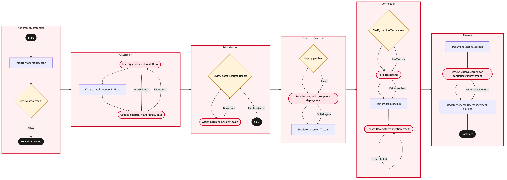

Updated 2026-08-21
Vulnerability Management and Patch Assurance
Process flow
Click to zoom

Process steps
▼
Phase 1 — Vulnerability Detection
2 steps
| Step | Activity | Role | System | Input | Output | KPI | Dec | Exc | Pain point |
|---|---|---|---|---|---|---|---|---|---|
| 1.1 | Initiate vulnerability scan | IT Security Analyst | AWSA | Scheduled scan schedule or critical vulnerability report | Vulnerability scan report | Scan completion time < 2 hours | N | N | Delayed scans due to resource contention on AWS. |
| 1.2 | Review scan results | IT Security Analyst | ITSM PlatformC | Vulnerability scan report | List of detected vulnerabilities | Vulnerability detection accuracy > 95% | Y | N | False positives in scan results. |
▼
Phase 2 — Assessment
3 steps
| Step | Activity | Role | System | Input | Output | KPI | Dec | Exc | Pain point |
|---|---|---|---|---|---|---|---|---|---|
| 2.1 | Identify critical vulnerabilities | IT Security Analyst | Databricks LakehouseB | List of detected vulnerabilities | Prioritized list of critical vulnerabilities | Critical vulnerability identification rate > 80% | N | Y | Lack of historical data for accurate prioritization. |
| 2.2 | Create patch request in ITSM | IT Security Analyst | ITSM PlatformC | Prioritized list of critical vulnerabilities | Patch request tickets | Patch request creation time < 1 hour | N | N | Manual data entry errors leading to delays. |
| 2.3 | Collect historical vulnerability data | IT Security Analyst | Databricks LakehouseB | None | Historical vulnerability data | Data collection time < 4 hours | N | Y | Data retrieval issues from Databricks. |
▼
Phase 3 — Prioritization
2 steps
| Step | Activity | Role | System | Input | Output | KPI | Dec | Exc | Pain point |
|---|---|---|---|---|---|---|---|---|---|
| 3.1 | Review patch request tickets | IT Security Manager | ITSM PlatformC | Patch request tickets | Approved or rejected patch requests | Patch approval rate > 90% | Y | N | Delays in senior management review. |
| 3.2 | Assign patch deployment tasks | IT Security Manager | Integration PlatformU | Approved patch request tickets | Patch deployment instructions | Task assignment time < 0.5 hours | N | Y | Integration platform downtime affecting task assignments. |
▼
Phase 4 — Patch Deployment
3 steps
| Step | Activity | Role | System | Input | Output | KPI | Dec | Exc | Pain point |
|---|---|---|---|---|---|---|---|---|---|
| 4.1 | Deploy patches | IT Operations Engineer | AWSA | Patch deployment instructions | Patches deployed | Patch deployment time < 6 hours | Y | N | Deployment failures due to system dependencies. |
| 4.2 | Troubleshoot and retry patch deployment | IT Operations Engineer | AWSA | Patch deployment instructions and error logs | Patches deployed | Retry success rate > 70% | N | Y | Persistent system issues causing deployment failures. |
| 4.3 | Escalate to senior IT team | IT Operations Engineer | ITSM PlatformC | Patch deployment instructions and error logs | Escalation ticket | Escalation response time < 1 hour | N | N | Lack of expertise in resolving complex issues. |
▼
Phase 5 — Verification
4 steps
| Step | Activity | Role | System | Input | Output | KPI | Dec | Exc | Pain point |
|---|---|---|---|---|---|---|---|---|---|
| 5.1 | Verify patch effectiveness | IT Security Analyst | AWSA | Patches deployed and system logs | Verification report | Verification completion time < 4 hours | Y | N | System performance degradation post-patch. |
| 5.2 | Rollback patches | IT Operations Engineer | AWSA | Verification report and rollback instructions | Patches rolled back | Rollback time < 3 hours | N | Y | Data loss during rollback. |
| 5.3 | Restore from backup | IT Operations Engineer | AWSA | Backup data and rollback instructions | System restored | Restoration time < 6 hours | N | N | Inadequate backup data availability. |
| 5.4 | Update ITSM with verification results | IT Security Analyst | ITSM PlatformC | Verification report and patch deployment details | Updated ITSM record | Record update time < 0.5 hours | N | Y | Data entry errors in ITSM. |
▼
Phase 6 — Phase 6
3 steps
| Step | Activity | Role | System | Input | Output | KPI | Dec | Exc | Pain point |
|---|---|---|---|---|---|---|---|---|---|
| 6.1 | Document lessons learned | IT Security Manager | ITSM PlatformC | Verification report and patch deployment details | Lessons learned document | Documentation completion time < 2 hours | N | N | Lack of documentation standards. |
| 6.2 | Review lessons learned for continuous improvement | IT Security Manager | ITSM PlatformC | Lessons learned document | Continuous improvement plan | Improvement plan development time < 1 hour | N | Y | Resistance to change in IT processes. |
| 6.3 | Update vulnerability management policies | IT Security Manager | ITSM PlatformC | Continuous improvement plan | Updated policies | Policy update time < 1 hour | N | N | Resistance to change in IT processes. |
Swim lanes
IT Security Analyst1.1 1.2 2.1 2.2 2.3 5.1 5.4
IT Security Manager3.1 3.2 6.1 6.2 6.3
IT Operations Engineer4.1 4.2 4.3 5.2 5.3
Systems touched
AWSAITSM PlatformCDatabricks LakehouseBIntegration PlatformU
Key performance indicators
- Scan completion time < 2 hours
- Vulnerability detection accuracy > 95%
- Critical vulnerability identification rate > 80%
- Patch request creation time < 1 hour
- Data collection time < 4 hours
Risks and control points
- False positives in scan results leading to unnecessary patch deployments.
- Lack of historical data affecting accurate prioritization.
- Integration platform downtime causing task assignment delays.
- Persistent system issues during patch deployment leading to failures.
- Data loss or performance degradation post-patch.
Air Canada Process Wiki — process and systems reference compiled from public sources
for IT Application Management and User Support pre-sales discovery.
Built 2026-08-21. Every system carries an evidence tier: tier C is an industry pattern and tier U is an open
question, and neither should be asserted as fact about Air Canada without confirmation in discovery.
Not affiliated with or endorsed by Air Canada. Air Canada, Aeroplan and Altitude are trademarks of Air Canada.